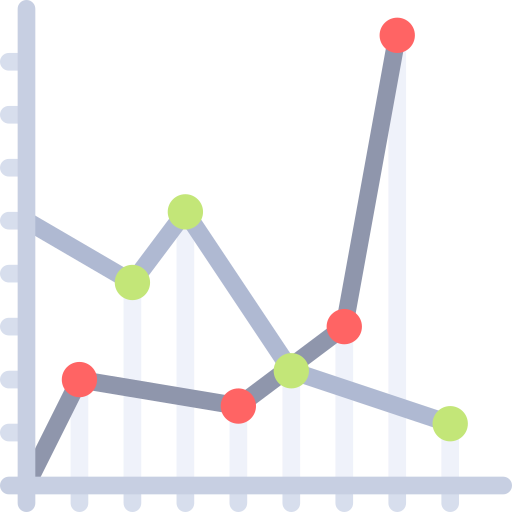

My Research
My research focuses on interdisciplinary problems between machine learning and science. In particular, I focus on spatio-temporal machine learning, time series analysis, graph processing and applications in material weathering.
You can find a list of my publications here.

Spatio-Temporal Machine Learning
My primary focus is on ML models for spatio-temporal data, like Gaussian Processes and Spatio-Temporal Graph Neural Netowrks.

Time Series Analysis
I study the interdependence between patterns in Multivariate Time-series datasets, as well as kernel design, dynamical systems forecasting and reservoir computing.